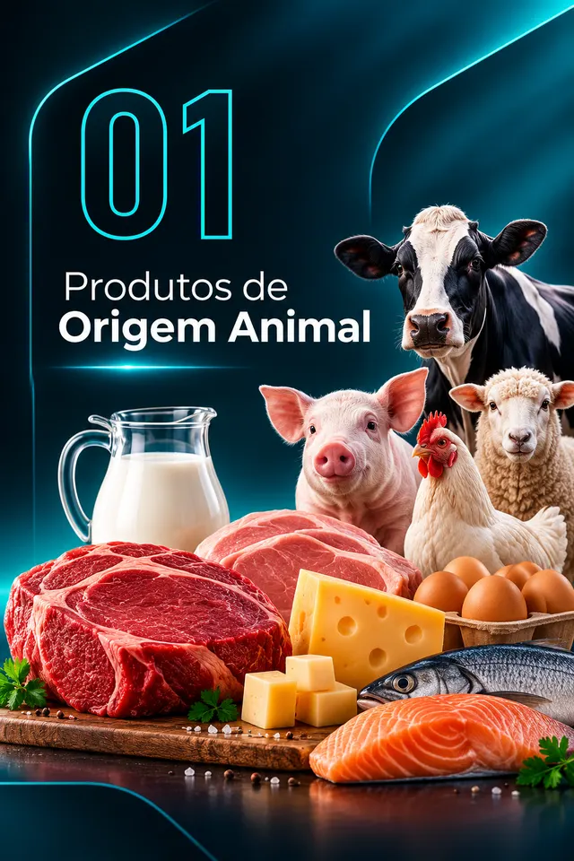
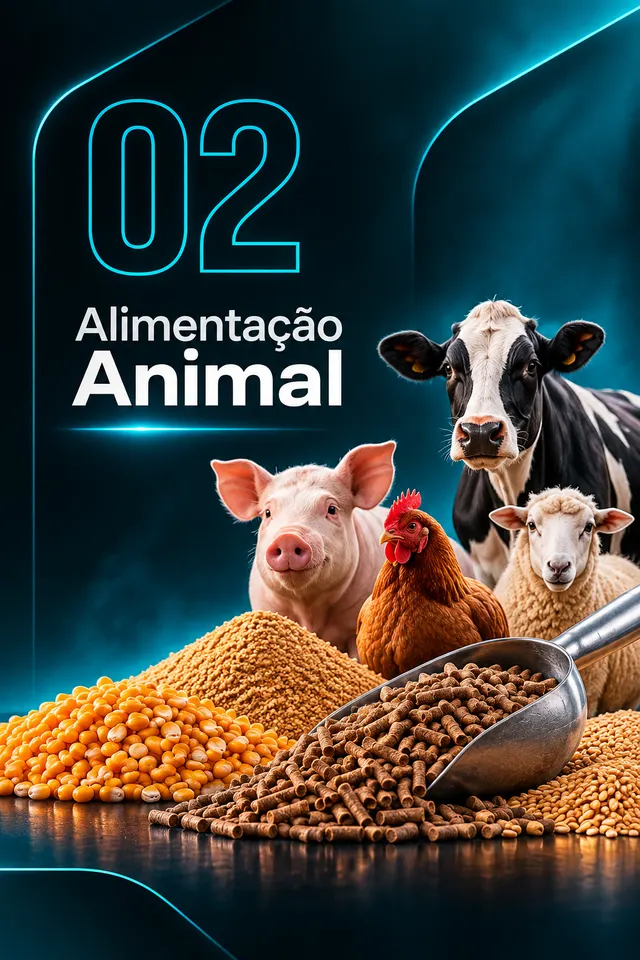
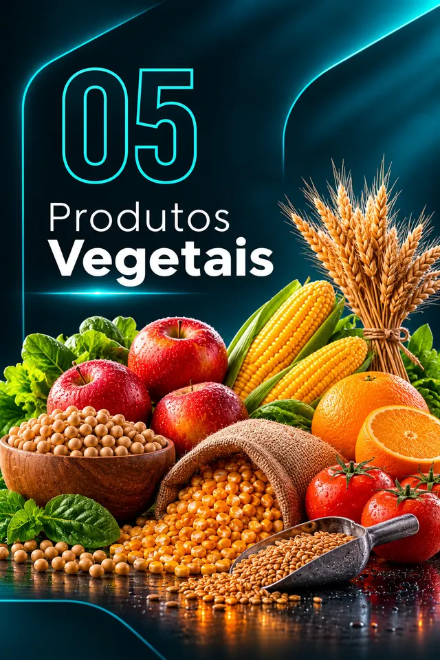

FOOD – Alimentos
Alimentos de origem animal e vegetal: carnes, pescados, laticínios e produtos processados.
- Conservação e cadeia do frio
- Identidade e integridade da carga
- Avarias, deterioração e alterações térmicas
Excelência técnica, segurança sanitária e confiabilidade nas operações industriais, portuárias e de comércio exterior.
Atendimento técnico em Blumenau e região. Conte sua necessidade e receba a orientação para o próximo passo.
A JMD3 oferece serviços especializados de inspeção veterinária, perícias portuárias, assistência técnica aduaneira, avaliações técnico-científicas e elaboração de laudos e pareceres técnicos, com atuação multidisciplinar nas áreas de Medicina Veterinária, Química, Química de Alimentos e Meio Ambiente, respeitando as habilitações profissionais aplicáveis.
Entre em ContatoAvaliações baseadas em critérios técnico-científicos, evidências documentadas e rastreabilidade.
Medicina Veterinária, Química, Química de Alimentos e Meio Ambiente, respeitando as habilitações profissionais.
Atuação alinhada à legislação aplicável, às normas do MAPA e às exigências das operações de comércio exterior.
Inspeção, perícia e assistência técnica para importadores, exportadores, indústrias, operadores logísticos, seguradoras e escritórios de advocacia.
Avaliação sanitária, qualidade, conservação e conformidade de produtos de origem animal.
Saiba mais →Inspeção técnica de cargas e contêineres, investigação de avarias, contaminações, alterações térmicas, perdas e não conformidades em importação e exportação.
Saiba mais →Avaliação técnica de mercadorias, apoio documental e acompanhamento de procedimentos de importação e exportação.
Saiba mais →Avaliações especializadas em Medicina Veterinária, Química, Química de Alimentos e Meio Ambiente.
Saiba mais →Avaliação de temperatura, transporte, armazenamento e comprometimento de produtos refrigerados e congelados.
Saiba mais →Suporte em disputas comerciais, processos judiciais e administrativos e demandas de seguradoras.
Saiba mais →Inspeção de cargas, avaliação de danos, investigação de não conformidades e assistência técnica especializada.

Alimentos de origem animal e vegetal: carnes, pescados, laticínios e produtos processados.

Rações, ingredientes, matérias-primas, aditivos e produtos para alimentação animal.
Vinhos, cervejas, destilados, sucos e demais bebidas alcoólicas e não alcoólicas.

Grãos, frutas, sementes, produtos agrícolas e vegetais processados.
Azeites de oliva, óleos de soja, girassol, milho, canola, palma, coco e similares.
Aplicável a todos os segmentos: Food, Feed, Bebidas, Vegetais e Óleos.
Os serviços incluem avaliações técnicas, investigações de não conformidades, perícias extrajudiciais, pareceres e assistência técnica judicial, dentro das atribuições dos profissionais habilitados.
Transparência: a JMD3 presta perícias particulares e assistência técnica. Esses serviços não constituem atos oficiais da Receita Federal ou de órgãos fiscalizadores, salvo quando houver o credenciamento e a designação correspondentes. A atuação em Química, Medicina Veterinária e Meio Ambiente respeita as habilitações e atribuições dos profissionais responsáveis.
Um fluxo simples para entender sua necessidade, orientar os próximos passos e entregar suporte técnico com segurança documental.
Você informa sua demanda, área de atuação, localização e urgência para direcionarmos o atendimento correto.
A JMD3 avalia o enquadramento técnico, exigências regulatórias e documentos necessários para o serviço.
Realizamos inspeções, orientações, verificações ou perícias conforme o escopo definido e as normas aplicáveis.
Você recebe relatórios, laudos ou orientações finais com rastreabilidade e suporte para os próximos passos.
Entenda como a JMD3 pode apoiar a regularização sanitária, a inspeção veterinária e a conformidade de sua operação.
Indústrias de produtos de origem animal, alimentos para animais, bebidas e operações de importação ou exportação podem precisar de suporte técnico e sanitário.
Sim. A atuação inclui orientação sobre conformidade, documentação e exigências aplicáveis a registros e inspeção federal.
Sim. O escopo contempla rações, suplementos, ingredientes e aditivos, além de cervejas, vinhos, destilados, sucos e néctares.
Preencha o formulário com o serviço desejado ou chame no WhatsApp. Assim, a equipe entende o cenário e direciona os próximos passos.
Sim. Fazemos inspeção de cargas e contêineres, avaliação de avarias, vazamentos, contaminações e alterações de temperatura, com laudo técnico e parecer pericial.
Não. A JMD3 presta perícias particulares e assistência técnica. Atos oficiais dependem do credenciamento e da designação correspondentes.
Alimentos, rações, bebidas, vegetais e óleos, azeites e gorduras vegetais, em importação, exportação e transporte nacional.
Entre em contato com nossa equipe técnica e descubra como a JMD3 pode apoiar suas operações de inspeção, perícia e comércio exterior.
Preencha o essencial. A mensagem será aberta diretamente no WhatsApp para agilizar seu atendimento.